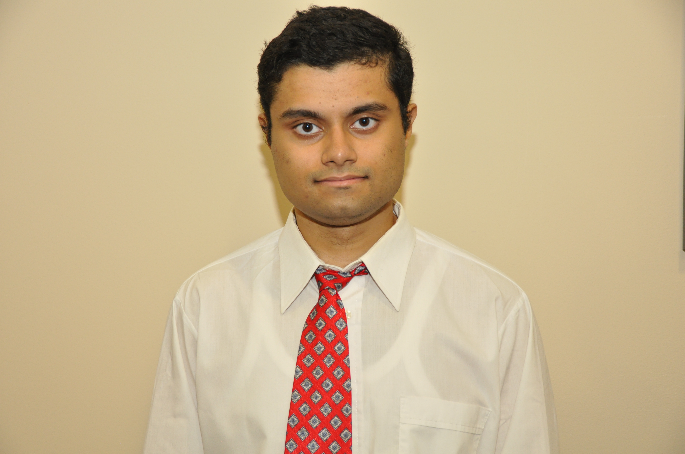
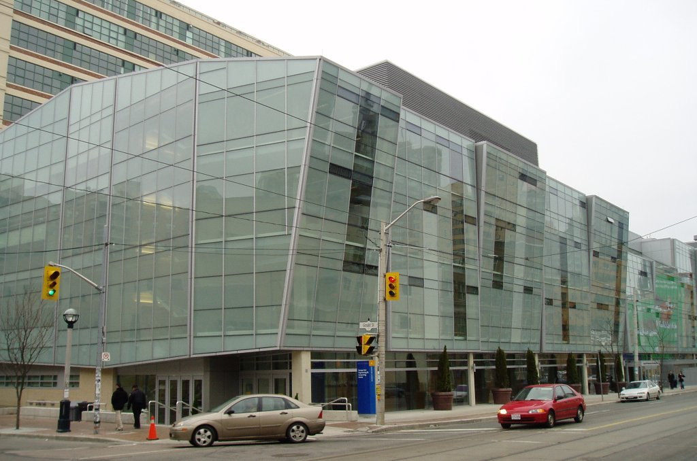
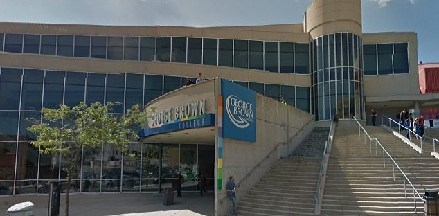
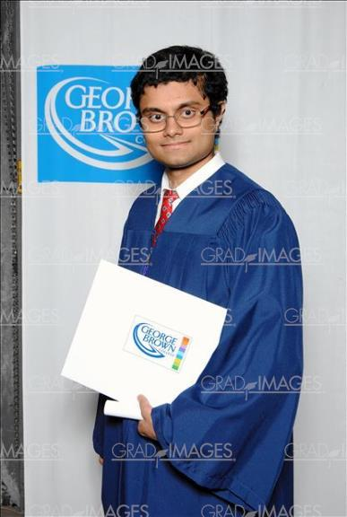

Welcome to Naushad Sayeed's portfolio!
| About Me | |
|---|---|
|  | Computer programmer in making who's a current University student. I have plans in the future of being a Web Developer. I have been doing computer science and computer arts before I was in post-secondary school. I did my first computer science and arts when I was in grade 10. Then I continued doing computer science in grade 11 and 12. After that, I realized I want to be a web developer when I first started post-secondary school since that's where I first learned HTML/CSS. |
| Ryerson University (X-University) | I'm currently Ryerson Computer Science who's heading into my fourth year. I used to be in the Image Arts Photography program before I got accepted to the Computer Science program. |
|---|---|
|  |
| George Brown College | Before Ryerson, I was a in George Brown to get my diploma and that's where I learned the following skills:
|
|
|---|---|---|
|  |  | |
My Contact


© 2014 Naushad Sayeed, All rights reserved